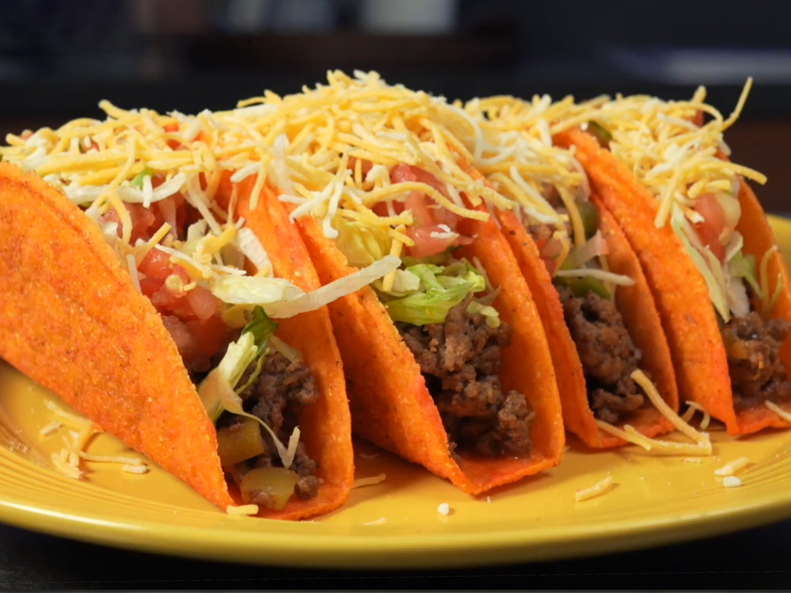

Return
Homestyle Doritos Locos Tacos

Description
Have a craving for Doritos Locos Tacos but not for subpar fastfood service? These tacos are what you've been looking for.
They have a crunchy shell reminiscent of Nacho Cheese doritos, and you don't have to pray to the taco gods that the teenage employee is in the mood to get your toppings correct.
Ingredients
- Old El Paso Nacho Cheese Kit
- 1 pound of ground beef
- Toppings of choice (lettuce, cheese, hot sauce, etc)
- Water
Steps
- Prepare your lettuce if using lettuce as a topping
- Get a strainer and a bowl ready as well
- Brown your ground beef in a frying pan
- Strain the meat into the strainer and get rid of the excess grease
- Toss meat back into pan with 1 cup of water, as well as the Old El Paso seasoning mix
- Bring to a boil and then lower to a simmer, stirring ocassionally as the sauce thickens
- After 5 minutes, or reduced sauce, Place beef into taco shells
- Place desired toppings on tacos
- Enjoy!